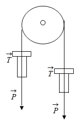
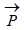
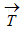
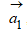
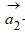
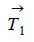
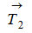
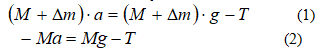
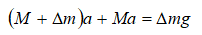

Виртуальная лаборатория по физике
Цель работы: 1. Приобретение навыков в сборке простейших электрических цепей.
2. Экспериментальное определение сопротивления проводника методом амперметра и вольтметра.
3. Проверка правила Кирхгофа.
Необходимые приборы: источник питания ВС-24М , набор амперметров и вольтметров, набор реостатов (по 3-штуки)
В металлических проводниках в широком диапазоне токов наблюдается простейшая связь током и напряжением:
U = I · R
R-сопротивление проводника, величина, зависящая от геометрии проводника и его материала. Вольт - амперная характеристика имеет вид прямой:

Задание 1. Определение сопротивления двух проводников
Собрать схему (рисунок 1)
а) Регулируя величину выходного напряжения источника ВС-24,
получить ряд значений токов и напряжений.

Занесите данные в таблицу 1.

Определить значения: R1,R2,R3,....,Rn.Найти среднее значение: Rср
б) Повторить все для другого сопротивления R` .Найти
R1`,R2`,R3`,....,Rn`
в) Соединить R1 и R` последовательно, (рисунок 2) определить их

сопротивление, в том же соединении, тем же методом. Сравнить со значением, получаемом по формуле.
Занесите данные в таблицу 2.

г) Провести то же измерения и сравнения при параллельном соединении R1и R` . Оценить погрешности, соберите схему (рисунок 3).

Занесите данные в таблицу 2.

Задание 2. Проверка правила Кирхгофа.
Правила 1. Сумма токов в узле равна нулю.
Σ
Ii=0
Правила 2. Суммарное падение напряжения в простом замкнутом rонтуре равно сумме ЭДС действующих в контуре:

1. Электрическая схема должна быть предложена преподавателем (она может быть различной).
2. Разобраться в предложенной схеме. Выбрать какой - либо узел и замкнутый контур.
Указать какие и где должен быть поставлены.
4. Произвести необходимые измерения и оценки.

КОНТРОЛЬНЫЕ ВОПРОСЫ
1. Следствием каких более общих положений являются правила Кирхгофа ?
2. Сформулируйте закон Ома в дифференциальной форме.
3. Каковы основные предпосылки объяснения закона Ома в классической теории проводимости металлов ?
4. Почему проводимость большинства металлов падает с увеличением температуры ?
5. Что такое скорость дрейфа носителей зарядов ?
ЛИТЕРАТУРА
1. Ж. Абдула, П. Асқаров. Физика курсы. Алматы. 2004 ж.
2. П.В. Савельев. Курс общей физики, Электричество и магнетизм. М.: Астрель, АСТ. 2004 г.
3. Ж. Тобаяқов.Электр және магнетизм. Алматы. Мектеп. 2003 жыл
4. Б. Арызханов. Физика курсы.Алматы.Мектеп.2001ж
5. С.Э.Фриш, А.В. Тиморева. Жалпы физика курсы. т.2. Алматы. Мектеп. 2000 жыл
6. Г.М. Гершензон, Н.Н. Малов. Курс общей физики. М.: Наука, 1990 г.
7. С. Г. Калашников. Электричество. М.: Наука, 1985 г.
8. И.В. Савельев. Курс общей физики. Т.2. М., Высшая школа, 1977г
9. Б.М. Яворский., А.А. Детлаф., Л.Б. Мильковский. Курс общей физики. т.3. М., Высшая школа. 1977г.
10. Г.А. Зисман, О.М. Тодес. Курс физики, Электричество и магнетизм. т.2. М.: Наука, 1974 г.